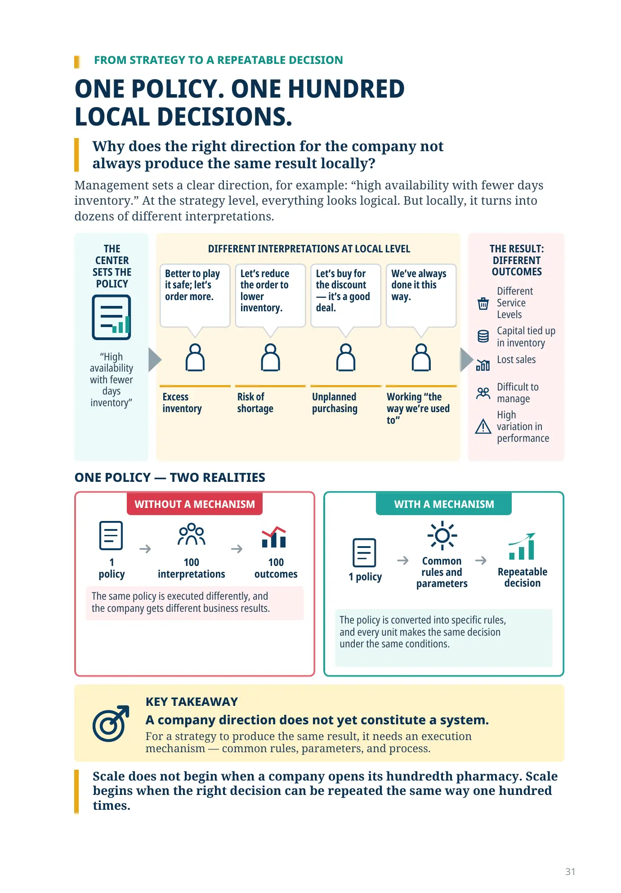
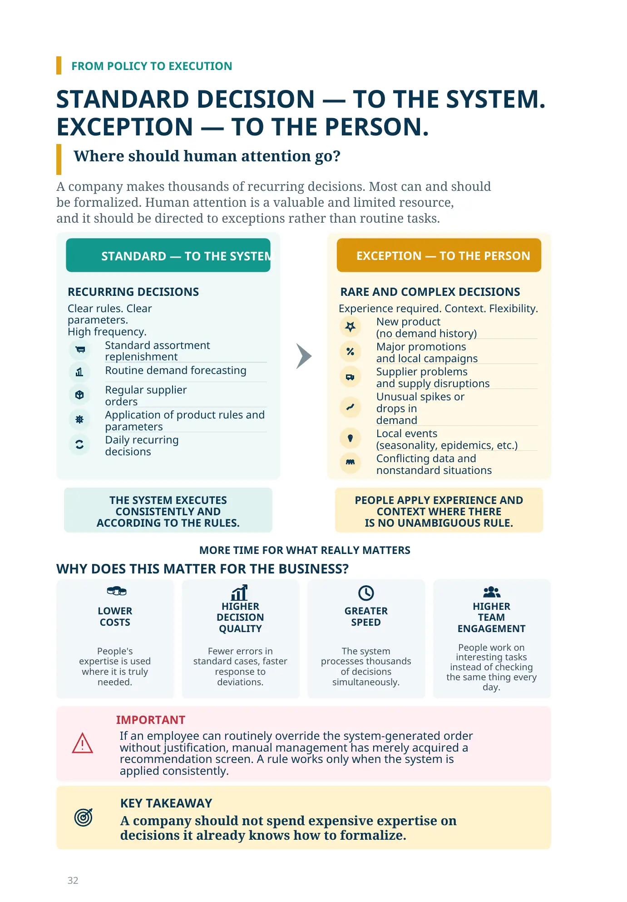
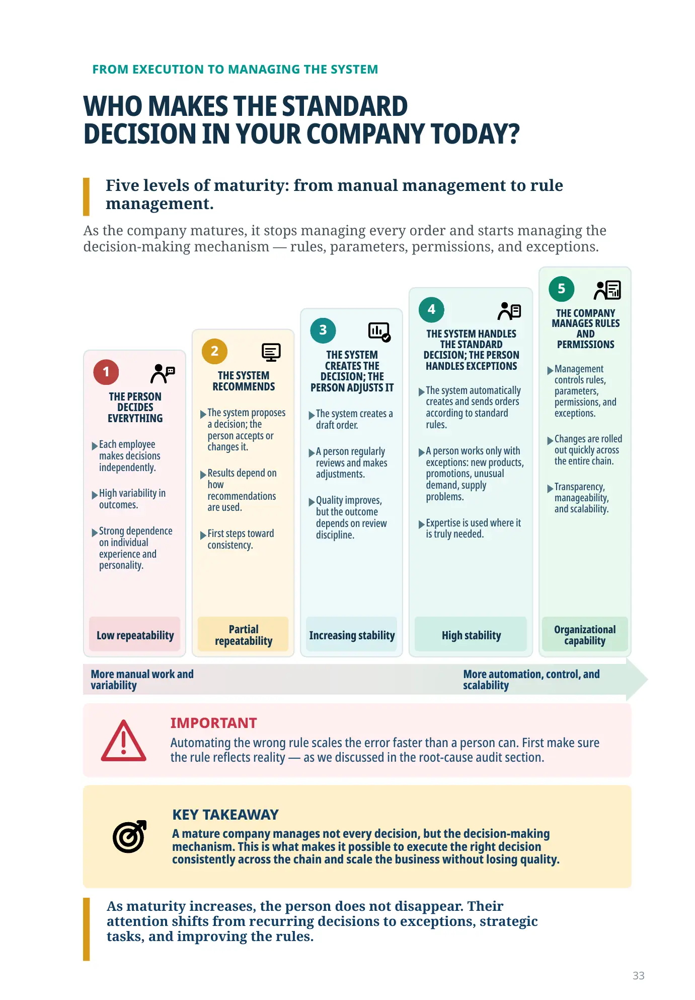
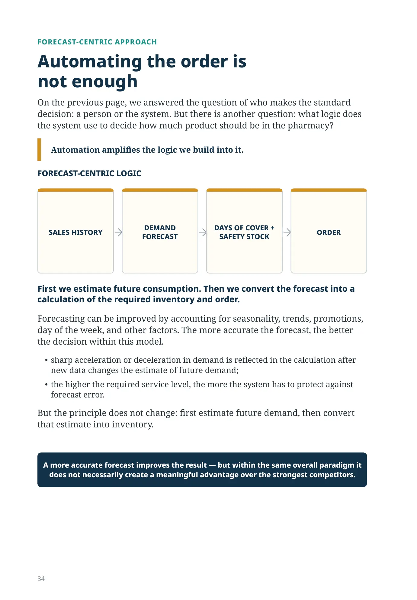
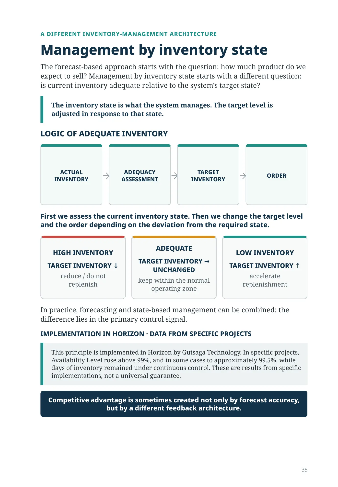
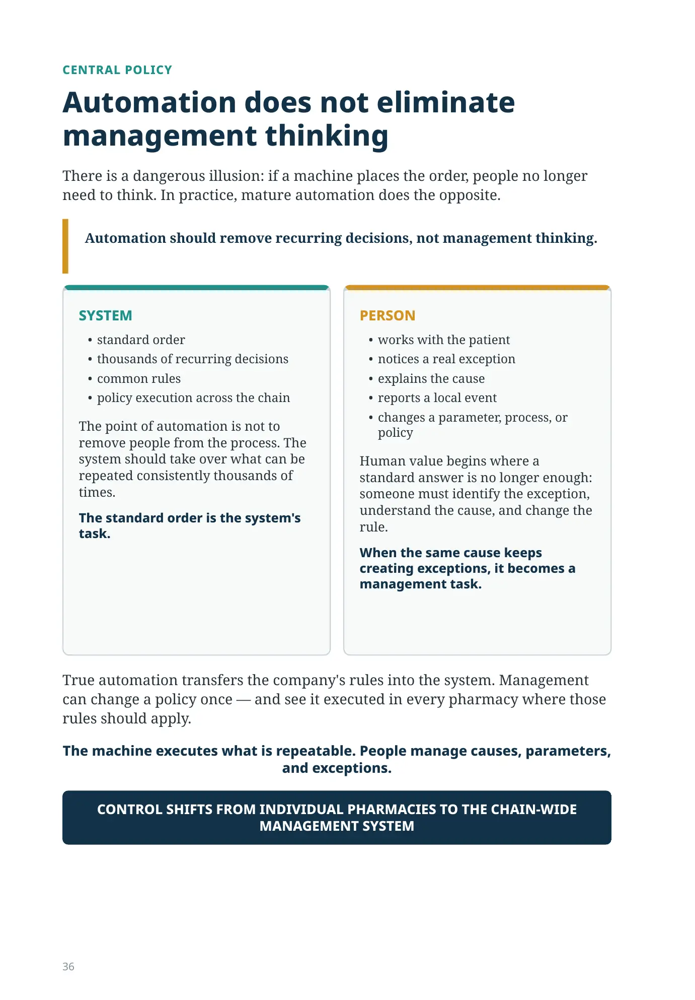
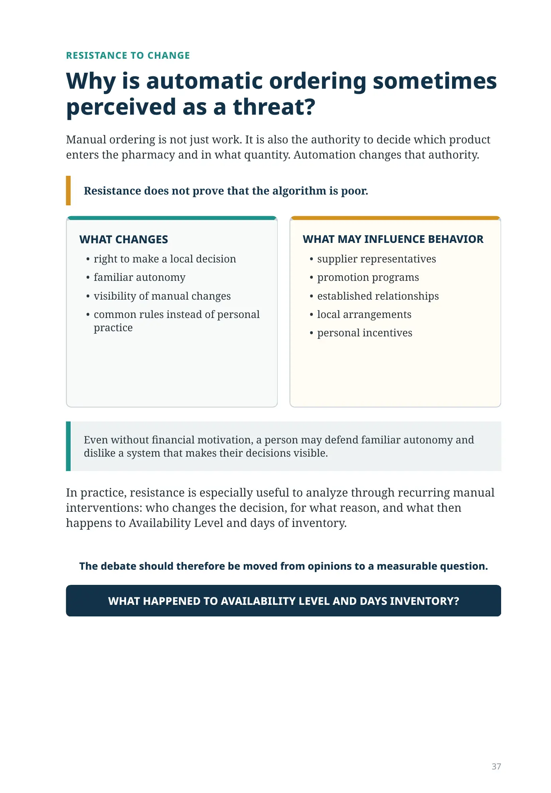
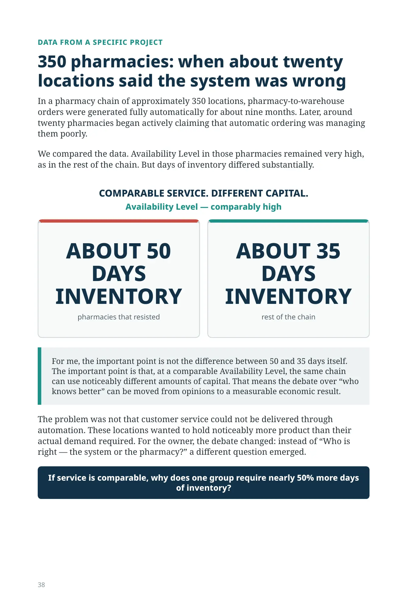
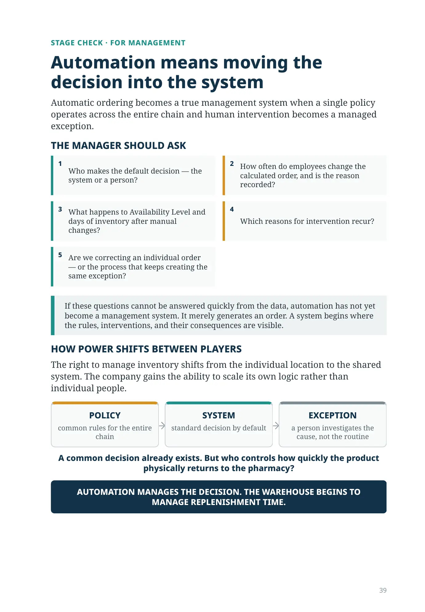
Can one hundred pharmacies manage inventory in the same way?
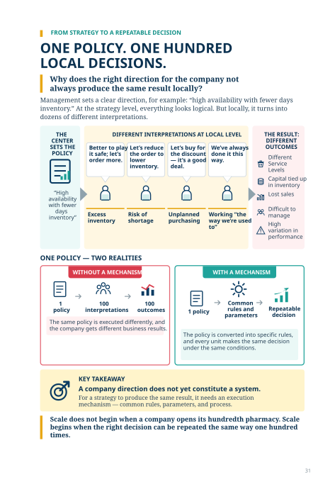
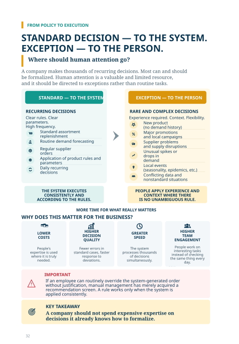
FROM EXECUTION TO MANAGING THE SYSTEM
WHO MAKES THE STANDARD
DECISION IN YOUR COMPANY TODAY?
Five levels of maturity: from manual management to rule management.
As the company matures, it stops managing every order and starts managing the decision-making mechanism — rules, parameters, permissions, and exceptions.
1
THE PERSON DECIDES EVERYTHING
Each employee makes decisions independently.
High variability in outcomes.
Strong dependence on individual experience and personality.
Low repeatability
2
THE SYSTEM RECOMMENDS
The system proposes a decision; the person accepts or changes it.
Results depend on how recommendations are used.
First steps toward consistency.
Partial repeatability
3
THE SYSTEM CREATES THE DECISION; THE PERSON ADJUSTS IT
The system creates a draft order.
A person regularly reviews and makes adjustments.
Quality improves, but the outcome depends on review discipline.
Increasing stability
4
THE SYSTEM HANDLES THE STANDARD DECISION; THE PERSON HANDLES EXCEPTIONS
The system automatically creates and sends orders according to standard rules.
A person works only with exceptions: new products, promotions, unusual demand, supply problems.
Expertise is used where it is truly needed.
High stability
5
THE COMPANY MANAGES RULES AND PERMISSIONS
Management controls rules, parameters, permissions, and exceptions.
Changes are rolled out quickly across the entire chain.
Transparency, manageability, and scalability.
Organizational capability
More manual work and variability
More automation, control, and scalability
IMPORTANT
Automating the wrong rule scales the error faster than a person can. First make sure the rule reflects reality — as we discussed in the root-cause audit section.
KEY TAKEAWAY
A mature company manages not every decision, but the decision-making mechanism. This is what makes it possible to execute the right decision consistently across the chain and scale the business without losing quality.
As maturity increases, the person does not disappear. Their attention shifts from recurring decisions to exceptions, strategic tasks, and improving the rules.
FORECAST-CENTRIC APPROACH
Automating the order is not enough
On the previous page, we answered the question of who makes the standard decision: a person or the system. But there is another question: what logic does the system use to decide how much product should be in the pharmacy?
Automation amplifies the logic we build into it.
FORECAST-CENTRIC LOGIC
SALES HISTORY
DEMAND FORECAST
DAYS OF COVER + SAFETY STOCK
ORDER
First we estimate future consumption. Then we convert the forecast into a calculation of the required inventory and order.
Forecasting can be improved by accounting for seasonality, trends, promotions, day of the week, and other factors. The more accurate the forecast, the better the decision within this model.
- sharp acceleration or deceleration in demand is reflected in the calculation after new data changes the estimate of future demand;
- the higher the required service level, the more the system has to protect against forecast error.
But the principle does not change: first estimate future demand, then convert that estimate into inventory.
A more accurate forecast improves the result — but within the same overall paradigm it does not necessarily create a meaningful advantage over the strongest competitors.
A DIFFERENT INVENTORY-MANAGEMENT ARCHITECTURE
Management by inventory state
The forecast-based approach starts with the question: how much product do we expect to sell? Management by inventory state starts with a different question: is current inventory adequate relative to the system's target state?
The inventory state is what the system manages. The target level is adjusted in response to that state.
LOGIC OF ADEQUATE INVENTORY
ACTUAL INVENTORY
ADEQUACY ASSESSMENT
TARGET INVENTORY
ORDER
First we assess the current inventory state. Then we change the target level and the order depending on the deviation from the required state.
HIGH INVENTORY
TARGET INVENTORY ↓
reduce / do not replenish
ADEQUATE
TARGET INVENTORY → UNCHANGED
keep within the normal operating zone
LOW INVENTORY
TARGET INVENTORY ↑
accelerate replenishment
In practice, forecasting and state-based management can be combined; the difference lies in the primary control signal.
IMPLEMENTATION IN HORIZON · DATA FROM SPECIFIC PROJECTS
This principle is implemented in Horizon by Gutsaga Technology. In specific projects, Availability Level rose above 99%, and in some cases to approximately 99.5%, while days of inventory remained under continuous control. These are results from specific implementations, not a universal guarantee.
Competitive advantage is sometimes created not only by forecast accuracy, but by a different feedback architecture.
CENTRAL POLICY
Automation does not eliminate management thinking
There is a dangerous illusion: if a machine places the order, people no longer need to think. In practice, mature automation does the opposite.
Automation should remove recurring decisions, not management thinking.
SYSTEM
- standard order
- thousands of recurring decisions
- common rules
- policy execution across the chain
The point of automation is not to remove people from the process. The system should take over what can be repeated consistently thousands of times.
The standard order is the system's task.
PERSON
- works with the patient
- notices a real exception
- explains the cause
- reports a local event
- changes a parameter, process, or policy
Human value begins where a standard answer is no longer enough: someone must identify the exception, understand the cause, and change the rule.
When the same cause keeps creating exceptions, it becomes a management task.
True automation transfers the company's rules into the system. Management can change a policy once — and see it executed in every pharmacy where those rules should apply.
The machine executes what is repeatable. People manage causes, parameters, and exceptions.
CONTROL SHIFTS FROM INDIVIDUAL PHARMACIES TO THE CHAIN-WIDE MANAGEMENT SYSTEM
RESISTANCE TO CHANGE
Why is automatic ordering sometimes perceived as a threat?
Manual ordering is not just work. It is also the authority to decide which product enters the pharmacy and in what quantity. Automation changes that authority.
Resistance does not prove that the algorithm is poor.
WHAT CHANGES
- right to make a local decision
- familiar autonomy
- visibility of manual changes
- common rules instead of personal practice
WHAT MAY INFLUENCE BEHAVIOR
- supplier representatives
- promotion programs
- established relationships
- local arrangements
- personal incentives
Even without financial motivation, a person may defend familiar autonomy and dislike a system that makes their decisions visible.
In practice, resistance is especially useful to analyze through recurring manual interventions: who changes the decision, for what reason, and what then happens to Availability Level and days of inventory.
The debate should therefore be moved from opinions to a measurable question.
WHAT HAPPENED TO AVAILABILITY LEVEL AND DAYS INVENTORY?
DATA FROM A SPECIFIC PROJECT
350 pharmacies: when about twenty locations said the system was wrong
In a pharmacy chain of approximately 350 locations, pharmacy-to-warehouse orders were generated fully automatically for about nine months. Later, around twenty pharmacies began actively claiming that automatic ordering was managing them poorly.
We compared the data. Availability Level in those pharmacies remained very high, as in the rest of the chain. But days of inventory differed substantially.
COMPARABLE SERVICE. DIFFERENT CAPITAL.
Availability Level — comparably high
ABOUT 50 DAYS INVENTORY
pharmacies that resisted
ABOUT 35 DAYS INVENTORY
rest of the chain
For me, the important point is not the difference between 50 and 35 days itself. The important point is that, at a comparable Availability Level, the same chain can use noticeably different amounts of capital. That means the debate over “who knows better” can be moved from opinions to a measurable economic result.
The problem was not that customer service could not be delivered through automation. These locations wanted to hold noticeably more product than their actual demand required. For the owner, the debate changed: instead of “Who is right — the system or the pharmacy?” a different question emerged.
If service is comparable, why does one group require nearly 50% more days of inventory?
STAGE CHECK · FOR MANAGEMENT
Automation means moving the decision into the system
Automatic ordering becomes a true management system when a single policy operates across the entire chain and human intervention becomes a managed exception.
THE MANAGER SHOULD ASK
- Who makes the default decision — the system or a person?
- How often do employees change the calculated order, and is the reason recorded?
- What happens to Availability Level and days of inventory after manual changes?
- Which reasons for intervention recur?
- Are we correcting an individual order — or the process that keeps creating the same exception?
If these questions cannot be answered quickly from the data, automation has not yet become a management system. It merely generates an order. A system begins where the rules, interventions, and their consequences are visible.
HOW POWER SHIFTS BETWEEN PLAYERS
The right to manage inventory shifts from the individual location to the shared system. The company gains the ability to scale its own logic rather than individual people.
POLICY
common rules for the entire chain
SYSTEM
standard decision by default
EXCEPTION
a person investigates the cause, not the routine
A common decision already exists. But who controls how quickly the product physically returns to the pharmacy?
AUTOMATION MANAGES THE DECISION. THE WAREHOUSE BEGINS TO MANAGE REPLENISHMENT TIME.